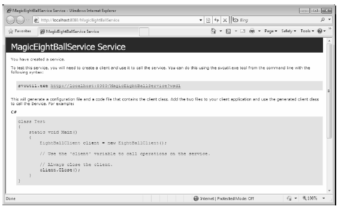

You are now ready to define a host. Although you would host a production-level service from a Windows service or an IIS virtual directory, you will make your first host a simple console named MagicEightBallServiceHost.
Once you create this new Console Application project, add a reference to the System.ServiceModel.dlly and MagicEightBallServiceLib.dlly assemblies, and then update your initial code file by importing the System.ServiceModel and MagicEightBallServiceLib namespaces:
using System; using System.Collections.Generic; using System.Linq; using System.Text; using System.ServiceModel; using MagicEightBallServiceLib; namespace MagicEightBallServiceHost { class Program { static void Main(string[] args) { Console.WriteLine("***** Console Based WCF Host *****"); Console.ReadLine(); } } }
The first step you must take when building a host for a WCF service type is to decide whether you want to define the necessary hosting logic completely in code or to relegate several low-level details to an application configuration file. As mentioned previously, the benefit of *.config files is that the host can change the underlying plumbing without requiring you to recompile and redeploy the executable. However, always remember this is strictly optional because you can hard-code the hosting logic using the types within the System.ServiceModel.dll assembly.
This console-based host will use an application configuration file, so insert a new Application Configuration File into your current project using the Project Add New Item menu option.
When you build a host for a WCF service type, you follow a predictable set of steps—some that rely on configuration and some that rely on code:
In the world of WCF, the term endpoint represents the address, binding, and contract rolled together in a nice, tidy package. In XML, an endpoint is expressed using the <endpoint> element and the address, binding, and contract elements. Update your *.config file to specify a single endpoint (reachable through port 8080) exposed by this host:
<?xml version="1.0" encoding="utf-8" ?> <configuration> <system.serviceModel> <services> <service name="MagicEightBallServiceLib.MagicEightBallService"> <endpoint address ="http://localhost:8080/MagicEightBallService" binding="basicHttpBinding" contract="MagicEightBallServiceLib.IEightBall"/> </service> </services> </system.serviceModel> </configuration>
Notice that the <system.serviceModel> element is the root for all of a host’s WCF settings. Each service exposed by the host is represented by a <service> element that is wrapped by the <services> base element. Here, your single <service> element uses the (optional) name attribute to specify the friendly name of the service type.
The nested <endpoint> element handles the task of defining the address, the binding model (basicHttpBinding, in this example), and the fully qualified name of the interface type defining the WCF service contract (IEightBall). Because you are using an HTTP-based binding, you use the http:// scheme, specifying an arbitrary port ID.
With the current configuration file in place, the actual programming logic required to complete the host is simple. When your executable starts up, you will create an instance of the ServiceHost class and inform it which WCF service it is responsible for hosting. At runtime, this object will automatically read the data within the scope of the <system.serviceModel> element of the host’s *.config file to determine the correct address, binding, and contract. It will then create the necessary plumbing:
static void Main(string[] args) { Console.WriteLine("***** Console Based WCF Host *****"); using (ServiceHost serviceHost = new ServiceHost(typeof(MagicEightBallService))) { // Open the host and start listening for incoming messages. serviceHost.Open(); // Keep the service running until the Enter key is pressed. Console.WriteLine("The service is ready."); Console.WriteLine("Press the Enter key to terminate service."); Console.ReadLine(); } }
If you run this application now, you will find that the host is alive in memory, ready to take incoming requests from remote clients.
Currently, you create your ServiceHost using a constructor that requires only the service’s type information. However, it is also possible to pass in an array of System.Uri types as a constructor argument to represent the collection of addresses this service is accessible from. Currently, you find the address using the *.config file. However, assume that you were to update the using scope like this:
using (ServiceHost serviceHost = new ServiceHost(typeof(MagicEightBallService), new Uri[]{new Uri("http://localhost:8080/MagicEightBallService")})) { ... }
If you did, you could now define your endpoint like this:
<endpoint address ="" binding="basicHttpBinding" contract="MagicEightBallServiceLib.IEightBall"/>
Of course, too much hard-coding within a host’s code base decreases flexibility. Therefore, the current host example assumes you create the service host simply by supplying the type information, as you did before:
using (ServiceHost serviceHost = new ServiceHost(typeof(MagicEightBallService))) { ... }
One of the (slightly frustrating) aspects of authoring host *.config files is that you have several ways to construct the XML descriptors, based on the amount of hard-coding you have in the code base (as you have just seen in the case of the optional Uri array). Here’s a reworking that shows yet another way to author *.config files:
<?xml version="1.0" encoding="utf-8" ?> <configuration> <system.serviceModel> <services> <service name="MagicEightBallServiceLib.MagicEightBallService"> <!-- Address obtained from <baseAddresses> --> <endpoint address ="" binding="basicHttpBinding" contract="MagicEightBallServiceLib.IEightBall"/> <!-- List all of the base addresses in a dedicated section--> <host> <baseAddresses> <add baseAddress ="http://localhost:8080/MagicEightBallService"/> </baseAddresses> </host> </service> </services> </system.serviceModel> </configuration>
In this case, the address attribute of the <endpoint> element is still empty; regardless of the fact that you do not specify an array of Uri objects in code when creating the ServiceHost, the application runs as before because the value is pulled from the baseAddresses scope. The benefit of storing the base address in a <host>’s <baseAddresses> region is that other parts of a *.config file (such as, which you’ll learn about shortly) also need to know the address of the service’s endpoint. Thus, rather than having to copy and pass address values within a single *.config file, you can isolate the single value, as shown in the preceding snippet.
Note In a later example, you’ll be introduced to a graphical configuration tool that allows you to author configuration files in a less tedious manner.
In any case, you have a bit more work to do before you build a client application to communicate with your service. Specifically, you will dig a bit deeper into the role of the ServiceHost class type and <service.serviceModel> element, as well as the role of metadata exchange (MEX) services.
You use the ServiceHost class type to configure and expose a WCF service from the hosting executable. However, be aware that you will only use this type directly when building a custom *.exe to host your services. If you use IIS (or the Vista and Windows 7 specific WAS) to expose a service, the ServiceHost object is created automatically on your behalf.
As you have seen, this type requires a complete service description, which is obtained dynamically through the configuration settings of the host’s *.config file. While this happens automatically when you create a ServiceHost object, it is possible to configure the state of your ServiceHost object manually using a number of members. In addition to Open() and Close() (which communicate with your service in a synchronous manner), Table 25-8 illustrates some further members of interest.
Table 25-8. Select Members of the ServiceHost Type
| Members | Meaning in Life |
|---|---|
| Authorization | This property gets the authorization level for the service being hosted. |
| AddDefaultEndpoints() | This method is new to .NET 4.0, and you can use it to configure a WCF service host programmatically so it uses any number of prebuilt endpoints supplied by the framework. |
| AddServiceEndpoint() | This method allows you to register an endpoint to the host programmatically. |
| BaseAddresses | This property obtains the list of registered base addresses for the current service. |
| BeginOpen() BeginClose() | These methods allow you to open and close a ServiceHost object asynchronously, using the standard asynchronous .NET delegate syntax. |
| CloseTimeout | This property allows you to set and get the time allowed for the service to close down. |
| Credentials | This property obtains the security credentials used by the current service. |
| EndOpen() EndClose() | These methods are the asynchronous counterparts to BeginOpen() and BeginClose(). |
| OpenTimeout | This property allows you to set and get the time allowed for the service to start up. |
| State | This property gets a value that indicates the current state of the communication object, which is represented by the CommunicationState enum (e.g., opened, closed, and created). |
You can see some additional aspects of ServiceHost in action by updating your Program class with a new static method that prints out the ABCs of each endpoint used by the host:
static void DisplayHostInfo(ServiceHost host) { Console.WriteLine(); Console.WriteLine("***** Host Info *****"); foreach (System.ServiceModel.Description.ServiceEndpoint se in host.Description.Endpoints) { Console.WriteLine("Address: {0}", se.Address); Console.WriteLine("Binding: {0}", se.Binding.Name); Console.WriteLine("Contract: {0}", se.Contract.Name); Console.WriteLine(); } Console.WriteLine("**********************"); }
Now assuming that you call this new method from within Main() after opening your host:
using (ServiceHost serviceHost = new ServiceHost(typeof(MagicEightBallService))) { // Open the host and start listening for incoming messages. serviceHost.Open(); DisplayHostInfo(serviceHost); ... }
Doing this will generate the statistics shown in the following output:
***** Console Based WCF Host ***** ***** Host Info ***** Address: http://localhost:8080/MagicEightBallService Binding: BasicHttpBinding Contract: IEightBall ********************** The service is ready. Press the Enter key to terminate service.
Like any XML element, <system.serviceModel> can define a set of sub-elements, each of which can be qualified using various attributes. While you should consult the .NET Framework 4.0 SDK documentation for full details regarding the set of possible attributes, here is a skeleton that lists the critical sub-elements:
<system.serviceModel> <behaviors> </behaviors> <client> </client> <commonBehaviors> </commonBehaviors> <diagnostics> </diagnostics> <comContracts> </comContracts> <services> </services> <bindings> </bindings> </system.serviceModel>
You’ll see more exotic configuration files as you move through the chapter; however, you can see the crux of each sub-element in Table 25-9.
Table 25-9. Sub-elements of <service.serviceModel>
| Sub-element | Meaning in Life |
|---|---|
| behaviors | WCF supports various endpoint and service behaviors. In a nutshell, a behavior allows you to qualify further the functionality of a host, service, or client. |
| bindings | This element allows you to fine-tune each of the WCF-supplied bindings (e.g., basicHttpBinding and netMsmqBinding), as well as to specify any custom bindings used by the host. |
| client | This element contains a list of endpoints a client uses to connect to a service. Obviously, this is not particularly useful in a host’s *.config file. |
| comContracts | This element defines COM contracts enabled for WCF and COM interoperability. |
| commonBehaviors | This element can only be set within a machine.config file. You can use it to define all of the behaviors used by each WCF service on a given machine. |
| diagnostics | This element contains settings for the diagnostic features of WCF. The user can enable/disable tracing, performance counters, and the WMI provider; the user can also add custom message filters. |
| services | This element contains a collection of WCF services exposed by the host. |
Recall that WCF client applications communicate with the WCF service through an intervening proxy type. While you could author the proxy code completely by hand, doing so would be tedious and errorprone. Ideally, you could use a tool to generate the necessary grunge code (including the client-side *.config file). Thankfully, the .NET Framework 4.0 SDK provides a command-line tool (svcutil.exe) for this purpose. Also, Visual Studio 2010 provides similar functionality through its Project ? Add Service Reference menu option.
For these tools to generate the necessary proxy code/*.config file, however, they must be able to discover the format of the WCF service interfaces and any defined data contracts (e.g., the method names and type of parameters).
Metadata exchange (MEX) is a WCF service behavior that you can use to fine-tune how the WCF runtime handles your service. Simply put, each <behavior> element can define a set of activities a given service can subscribe to. WCF provides numerous behaviors out of the box, and it is possible to build your own.
The MEX behavior (which is disabled by default) will intercept any metadata requests sent through HTTP GET. You must enable MEX if you want to allow svcutil.exe or Visual Studio 2010 to automate the creation of the required client-side proxy *.config file.
Enabling MEX is a matter of tweaking the host’s *.config file with the proper settings (or authoring the corresponding C# code). First, you must add a new <endpoint> just for MEX. Second, you need to define a WCF behavior to allow HTTP GET access. Third, you need to associate this behavior by name to your service using the behaviorConfiguration attribute on the opening <service> element. Finally, you need to add a <host> element to define the base address of this service (MEX will look here to figure out the locations of the types to describe).
Note You can bypass this final step if you pass in a System.Uri object to represent the base address as a parameter to the ServiceHost constructor.
Consider the following updated host *.config file, which creates a custom <behavior> element (named EightBallServiceMEXBehavior) that is associated to your service through the behaviorConfiguration attribute within the <service> definition:
<?xml version="1.0" encoding="utf-8" ?> <configuration> <system.serviceModel> <services> <service name="MagicEightBallServiceLib.MagicEightBallService" behaviorConfiguration = "EightBallServiceMEXBehavior"> <endpoint address ="" binding="basicHttpBinding" contract="MagicEightBallServiceLib.IEightBall"/> <!-- Enable the MEX endpoint --> <endpoint address="mex" binding="mexHttpBinding" contract="IMetadataExchange" /> <!-- Need to add this so MEX knows the address of our service --> <host> <baseAddresses> <add baseAddress ="http://localhost:8080/MagicEightBallService"/> </baseAddresses> </host> </service> </services> <!-- A behavior definition for MEX --> <behaviors> <serviceBehaviors> <behavior name="EightBallServiceMEXBehavior" > <serviceMetadata httpGetEnabled="true" /> </behavior> </serviceBehaviors> </behaviors> </system.serviceModel> </configuration>
You can now restart the service and view its metadata description using the web browser of your choice. To do so, enter the address as the URL while the host is still running:
http://localhost:8080/MagicEightBallService
Once you are at the homepage for your WCF service (see Figure 25-6), you are provided with basic details regarding how to interact with this service programmatically, as well as a way to view the WSDL contract by clicking the hyperlink at the top of the page. Recall that Web Service Description Language (WSDL) is a grammar that describes the structure of web services at a given endpoint.
Figure 25-6 Ready to view metadata using MEX
Your host now exposes two different endpoints (one for the service and one for MEX), so your host’s console output will appear like this:
***** Console Based WCF Host ***** ***** Host Info ***** Address: http://localhost:8080/MagicEightBallService Binding: BasicHttpBinding Contract: IEightBall Address: http://localhost:8080/MagicEightBallService/mex Binding: MetadataExchangeHttpBinding Contract: IMetadataExchange ********************** The service is ready.
Source Code You can find the MagicEightBallServiceHost project under the MagicEightBallServiceHTTP directory of Chapter 25.